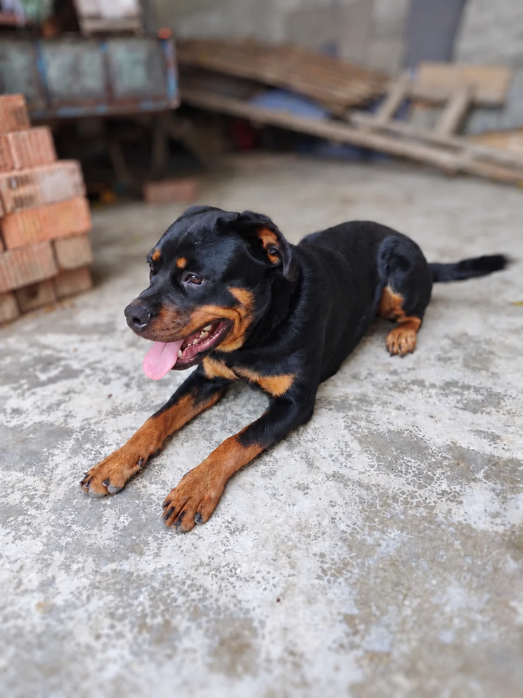

回家的故事，还在继续。
已领养伙伴的档案与回访，让新生活被认真记录。

已领养档案 · 持续更新
元宝有了新窗台，
也有了自己的名字。
已经被领养的小动物仍会留在小院的公开档案里。新的生活照片、视频和回访片段，会慢慢补进来，让每一次“已经找到家”都被真实地看见。
已找到家的伙伴
打开档案，查看它们的回访记录与近况。

已领养伙伴的档案与回访，让新生活被认真记录。
已经被领养的小动物仍会留在小院的公开档案里。新的生活照片、视频和回访片段，会慢慢补进来，让每一次“已经找到家”都被真实地看见。
打开档案，查看它们的回访记录与近况。